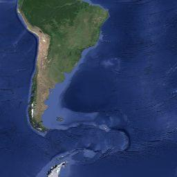
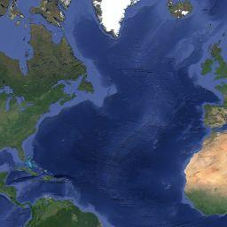
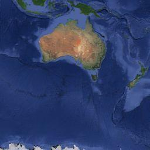
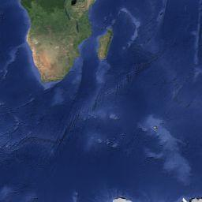
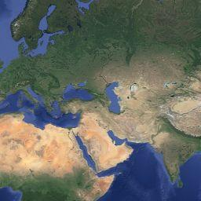
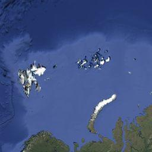
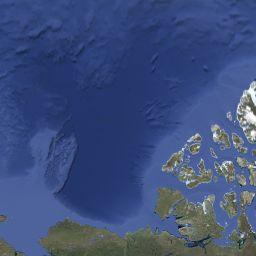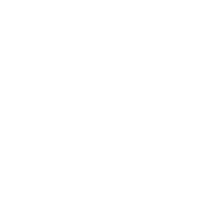
Картографические данные
Изображения ©2015 NASA, TerraMetrics
Картографические данные
Изображения ©2015 NASA, TerraMetrics
Изображения ©2015 NASA, TerraMetrics
Условия использования
Сообщить об ошибке на карте
Карта
Спутник
45°
Названия объектов


 

 


 
